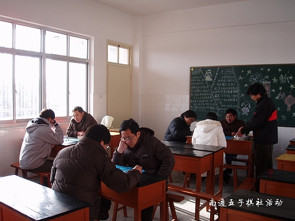

南通五子棋活动报道〔第一次〕
首页
江苏五子棋
#1 南通五子棋活动报道〔第一次〕 作者：有志青年 发表时间：2006-1-9 12:30:19
时间：2006-1-7下午1：30-6：00
地点：原定长江水煮鱼馆后移师天生港学校【有点类似党的第一次会议】
出席：锈刀、幽若【女】、江风、温柔一刀、止水、路程、有志青年、天堂的银元、宝儿
活动内容：棋艺切磋、晚上聚餐、商讨下一步活动计划
下一步活动计划：
1、建立qq群，定期网上活动，群号码：19459427 ；
2、建立南通连珠网 www.ntwzq.com ；
3、正月期间拟第二次活动。


［此帖子已被 有志青年 在 2006-1-9 21:34:46 编辑过］
#2 Re:南通五子棋网站第一次活动报道 作者：天堂的银元 发表时间：2006-1-9 15:45:42
这张帖子也要总置顶！
#3 Re:南通五子棋网站第一次活动报道 作者：幽若 发表时间：2006-1-10 10:02:59
为了提高人气,俺可基本是每个帖子都回了滴哟,同志们加油啊
#4 Re:南通五子棋网站第一次活动报道 作者：有志青年 发表时间：2006-1-10 10:43:00
加油
#5 Re:南通五子棋网站第一次活动报道 作者：温柔一刀 发表时间：2006-1-10 18:28:14
同志们一起努力！！！
#6 Re:南通五子棋网站第一次活动报道 作者：路程 发表时间：2006-1-10 20:31:14
有骨干分子,积极分子.还有南通一流的高手,不错.
#7 Re:南通五子棋网站第一次活动报道 作者：江风 发表时间：2006-1-10 22:54:59
还有领导 站着的就是.
#8 Re:南通五子棋网站第一次活动报道 作者：有志青年 发表时间：2006-1-18 15:55:19
第二次活动打算放在正月里面
#9 Re:南通五子棋网站第一次活动报道 作者：路程 发表时间：2006-2-7 11:15:50
建议有志青年刻《五子棋大师2》的光盘，以成本价10元出售，作为我们棋社以后的活动经费来源之一。
此光盘很适合五子棋爱好者学习练习提高使用。如果在光盘中能达到职业3段，基本可以参加我们港闸区的五子棋比赛了。
#10 Re:南通五子棋网站第一次活动报道 作者：ntren 发表时间：2006-2-7 23:51:45
哪里有《五子棋大师2》的光盘出售呀？小弟才来．请多关照！
#11 Re:南通五子棋网站第一次活动报道 作者：有志青年 发表时间：2006-2-8 8:16:34
1、本站连珠软件板块有下载
2、我这里有正版光盘，如果需要可以刻录一张送给你。【但是光盘版，不知联系是否方便】
#12 Re:南通五子棋网站第一次活动报道 作者：vuser 发表时间：2006-2-11 20:50:30
不错，支持南通人，刚知道，我也是南通人
#13 Re:南通五子棋网站第一次活动报道 作者：有志青年 发表时间：2006-2-16 12:22:37
顶
#14 Re:南通五子棋网站第一次活动报道 作者：414482371 发表时间：2006-2-21 18:53:24
我能不能加入啊 ，我知道我很差。可我希望能通过
 因为我会进步的呵呵
因为我会进步的呵呵
#15 Re:南通五子棋网站第一次活动报道 作者：有志青年 发表时间：2006-2-21 20:24:18
欢迎呀
#16 Re:南通五子棋活动报道〔第一次〕 作者：二十七刀 发表时间：2006-11-6 16:28:40
啊志，我是浙中沿海台州的，也想参加你们的活动，是远了点。。。到时候有什么聚会组织赛等打我电话 0576-3366665，二十七刀
#17 Re:Re:南通五子棋活动报道〔第一次〕 作者：有志青年 发表时间：2006-11-6 17:53:00
引用：
原文由 二十七刀 发表于 2006-11-6 16:28:40 :
啊志，我是浙中沿海台州的，也想参加你们的活动，是远了点。。。到时候有什么聚会组织赛等打我电话 0576-3366665，二十七刀
好呀，欢迎。
#18 Re:南通五子棋活动报道〔第一次〕 作者：黄药师 发表时间：2007-7-20 17:37:22
 汗～第一次活动的人现在还剩下几个啊？
汗～第一次活动的人现在还剩下几个啊？
锈刀、路程、有志青年、这是核心，每次活动都到位！
天堂的银元、幽若【女】、江风、温柔一刀、偶尔能看到！
止水、宝儿，我是没有见过！